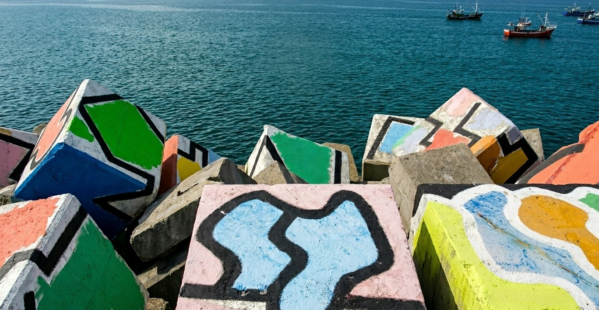

Llanes al Cubo 2026

Arte Contemporáneo y Folklore
Bajo el sobrenombre de la Folixa del Tardíu (la fiesta del otoño), Llanes al Cubo nació como una iniciativa estratégica para posicionar a la villa marinera como el corazón de la industria cultural de Asturias. Este evento no es solo una celebración, sino un espacio diseñado para reivindicar y poner en valor los elementos más significativos de la identidad asturiana dentro de un mercado globalizado, demostrando que nuestras raíces tienen un lugar privilegiado en la vanguardia contemporánea.
El festival se asienta sobre dos pilares fundamentales: la riqueza de la tradición propia y su conexión con el Arco Atlántico y la cultura celta. Durante sus jornadas, Llanes se transforma en un escenario vivo donde la cultura toma cada rincón: desde los conciertos de gaita y tonada tradicional hasta las actuaciones de grupos de gran prestigio nacional e internacional que exploran nuevos sonidos.
En 2026, Llanes al Cubo regresa para consolidar esa "folixa" (celebración) necesaria donde la historia, el arte y la identidad se encuentran, reafirmando que la cultura asturiana es un motor vivo, joven y lleno de futuro.